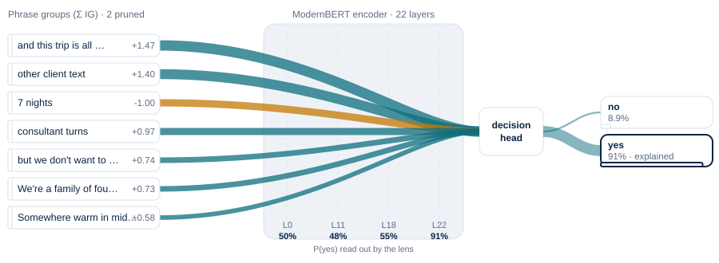

Co-consult’s travel work contains many small decisions inside a much larger task. Waypoint explores a System 1 layer for those decisions: a non-generative model scores supplied options, reports confidence and supports escalation to a language model or consultant. This paper reviews its two model designs, saved evaluation results and the gap between an offline escalation policy and the serving contract. Decide performs well on several synthetic Co-consult tasks, but results vary by use case, shortlist construction and phrasing. The contribution is a bounded integration model: use fast option scoring where the evidence supports it, keep hard constraints and action authority outside the model, and treat escalation as an explicit application responsibility.
Consultant: Hi! Where are you thinking of heading? Client: We're a family of four from Brisbane with two kids aged 5 and 8, and this trip is all about the kids. Somewhere warm in mid-July, ideally right on the beach. Consultant: Lovely. How long for, and roughly what budget? Client: 7 nights. Mid-range: we don't need luxury, but we don't want to be cramped either.Is the trip built around young children?
- Entropy-based confidence
- 0.5669
Threshold comparison only. No action is approved or executed.
The brief explicitly says the trip is about the children. The saved model favours yes, but its entropy-based confidence is lower than its top-option probability.
1. Small decisions inside a larger task
A consultant asks for a family holiday. Co-consult must decide what the client means, which specialist to call, how to change the shortlist and whether a draft still matches the brief. These are often bounded questions: choose one of the available routes, recognise a requested filter, or compare a small set of offers.
Waypoint gives those decisions their own model. It returns option probabilities rather than generating a sentence one token at a time. “System 1” names this fast decision role; “System 2” names the language-model or consultant route for work needing more deliberation. These are engineering roles, not a claim that the software reproduces human cognition.
The boundary matters. A model can choose only from supplied options and still choose the wrong one. An incorrect option description, missing alternative or misleading context can make a well-formed answer unsuitable. Constraining the output prevents invented output labels; it does not establish truth, consent or permission to book.
2. Two models, two different jobs
Decide reads the options together. A fine-tuned ModernBERT-base encoder reads the question, all options and the state in one sequence. A question-type embedding and a two-layer decision head produce scores at each option marker. A calibrated softmax turns those scores into probabilities. The supplied model is about 164 million parameters.
Rank reads candidates separately. A frozen Qwen3-Embedding-0.6B encoder and two learned projection heads map the state and candidates into a shared space. Candidate vectors can be cached, so a recurring pool does not need to be embedded from scratch for every request. This design is useful for retrieval, but it cannot compare each candidate against the whole brief in the same way as Decide.
| Component | Job | Important limit |
|---|---|---|
| Rank | Shortlist a large candidate pool. | A discarded candidate cannot be recovered by Decide. |
| Decide | Compare a bounded set of options. | The decision depends on the context and alternatives supplied. |
| Language model or consultant | Resolve uncertainty, gather missing context and handle broader work. | Escalation needs a deliberate application route. |
| Application checks | Enforce numeric constraints, access, consent and spending rules. | Model confidence cannot replace these checks. |
The pipeline first asks Rank for a shortlist, then passes it to Decide. That is an available architecture, not evidence that adding Rank improves every task. The small-pool results below show why the simpler path is sometimes better.
3. Confidence is a signal, not a guarantee
Waypoint answers yes/no, choice and ordered-scale questions. Each answer carries a probability distribution, an entropy-based confidence score and an escalation flag. Temperature calibration is fitted on held-out evaluation data by question type and option-count bucket.
A uniform distribution has confidence zero; a distribution concentrated on one option approaches one. K is the number of options. Zero-probability terms contribute zero. The implementation returns one when fewer than two options remain.
This score describes how concentrated the distribution is. It is not the top-option probability, and neither value is a promise of correctness on a particular request. Calibration must be assessed against observed labels on a relevant distribution.
With a caller-supplied threshold τ, an answer escalates when its confidence is strictly below that threshold. Equality passes this comparison.
The application must install the policy. The evaluation script saves per-use-case thresholds in the model configuration. In the reviewed prediction path, however, decide() passes the caller’s escalate_below argument to answer assembly; it does not select those saved thresholds automatically. If that argument is omitted, the raw escalation flag is false. An “always escalate” evaluation result must therefore be handled explicitly by the caller, not translated to an omitted threshold.
4. What the saved evaluation shows
The data card reports 20,600 training questions, 3,450 evaluation questions and 3,800 Co-consult test questions. The Co-consult examples were generated procedurally with rule-computed labels; they are not customer outcomes. Half of the test set uses held-out destinations and phrasings. Evaluation data is reused for checkpoint selection, calibration and threshold fitting.
In runs/decide-v0-base/test.json, Decide’s overall accuracy is 86.95%, expected calibration error is 0.0312, and accuracy on its most confident half is 98.68%. Expected calibration error summarises the gap between predicted top-option probabilities and observed correctness across bins. It is an aggregate metric, not an assurance for every use case.
| Use case | Questions | Accuracy |
|---|---|---|
| Brief understanding | 1,000 | 98.7% |
| Hotel ranking | 200 | 97.5% |
| Air ranking | 200 | 97.0% |
| Conversation routing | 400 | 95.0% |
| Filter mapping | 400 | 92.5% |
| Tool routing | 200 | 86.0% |
| Proposal review | 800 | 80.0% |
| Activity matching | 200 | 76.0% |
| Destination disambiguation | 400 | 53.5% |
The aggregate gives more weight to larger groups: brief understanding contributes 1,000 questions, while hotel ranking contributes 200. High overall performance can coexist with weak destination disambiguation. The public out-of-domain test reports 61.5% accuracy over 2,000 questions, which further limits any claim of broad decision competence.
These are inspected saved results, not a new evaluation. This paper uses the original test.json consistently. A later saved regeneration reports 87.03% accuracy and 0.0304 calibration error; it is a separate result, not silently combined with the original run.
The documentation reports about 10 ms for a single-question HTTP request using MLX on an M4 Pro. The saved original evaluation records 14.06 ms per question in its evaluation setup. Those are different measurement conditions; neither establishes end-to-end trip latency, uncached retrieval speed or production capacity.
5. Escalation improves the average, but needs local checks
The threshold study fits a 95% accuracy target on evaluation data, then applies the selected thresholds to test data. Its saved aggregate retains 77.03% of questions on the model path, with 95.97% accuracy on that retained set. “Retained” means accepted by an offline threshold rule; it does not mean a booking was executed.
| Use case | Retained on test | Accuracy when retained |
|---|---|---|
| Proposal review | 60.75% | 96.91% |
| Activity matching | 20.50% | 97.56% |
| Destination disambiguation | 0% · always escalate | Not applicable |
| Filter mapping | 100% | 92.50% |
| Tool routing | 100% | 86.00% |
The last two rows miss the 95% target on test even though their evaluation thresholds allow every answer through. Threshold selection does not guarantee generalisation to new phrasing. The pooled result is therefore insufficient for a release decision: each supported route needs its own evidence and an explicit fallback.
Escalated answers are not counted as correct in the retained-set accuracy. The study does not measure the quality, time or cost of the language model or consultant that would receive them. Those outcomes are needed to assess the complete System 1 / System 2 arrangement.
6. A shortlist can make the decision worse
On the supplied native pools of roughly five to ten options, Decide alone performs better than Rank followed by Decide over the top five candidates. Hotel accuracy falls from 97.5% to 78.0%; air falls from 97.0% to 95.0%; activity matching falls from 76.0% to 74.5%.
There are two separate risks. Rank can remove the correct answer, and changing the alternatives can change Decide’s behaviour even when the answer survives. For hotels, Rank’s top-five recall is 89%, so some answers are already lost before the final comparison. The source report also suspects dependence on the generator’s near-duplicate distractors.
The report recommends Decide alone for small option sets, approximately sixteen or fewer. Rank remains a candidate for pools too large to compare directly, but that role needs a valid large-pool evaluation. The saved “pool +40” experiment mixes candidates from other questions; the report explicitly rejects that construction as a valid air/activity test where destination facts are missing from option text. It should not be presented as large-inventory validation.
7. Inspect the mistake, not just the score
The supplied Waypoint Lens proposal uses saved model computations to show phrase attribution, intermediate-layer outputs and counterfactual edits. Its interface and planned explanation service are proposals; the displayed examples were computed from the saved models. It helps ask which input changes matter without claiming to reveal a complete causal account of the model.

Two children are in the brief. The model still says “no”.
In the original brief, the family has children aged five and eight. The saved model gives “yes, the trip is built around young children” only a 3.75% probability. Adding “and this trip is all about the kids” raises it to 95.77%. Adding “kid-friendly is a must” raises it only to 4.68%. Those are the proposal’s recorded counterfactual results, not newly generated examples.
The source identifies this as shortcut learning. A specific phrase drives the answer much more than another expression of a similar need. The original answer has confidence 0.7691, high enough to pass many plausible thresholds. Inspecting failure cases is therefore necessary even when aggregate calibration looks good.
The proposal also states limits on the interpretation tools. Attribution depends on the baseline and numerical approximation; the intermediate-layer lens is a proxy; attention shows where a head looks, not necessarily what determines its answer. Counterfactual checks provide a concrete route from a failure to improved examples and regression tests.
8. What belongs in Co-consult next
The next step is a bounded integration with consultant-reviewed evidence. Start by recording decisions alongside the current path, without letting the new model alter a booking. Compare the supplied state, options, prediction and consultant judgement, then evaluate by use case before permitting selected routes.
| Boundary | What to verify |
|---|---|
| State and options | Preserve tested field layouts. Include facts needed for the choice, an uncertainty route and checks for missing or duplicate candidates. |
| Hard constraints | Check budgets, ages, capacity and other numeric rules in code. Ask the model to judge the remaining soft fit. |
| Escalation policy | Apply a versioned policy per use case. Explicitly route unsupported and always-escalate cases to review. |
| Action authority | Keep supplier access, consent, spending limits and approval independent of the model’s score. |
| Evidence | Record the model version, state, candidates, probabilities, policy and eventual reviewed outcome. |
| Release decision | Measure errors, retained coverage and fallback quality on fresh consultant-labelled cases, including shifted wording and changed inventory. |
The source documents sensitivity to state layout and known weaknesses in budget arithmetic, activity restrictions and destination facts. Fine-tuning on real decisions is a proposed improvement, not a result demonstrated by the synthetic test. Keeping these distinctions visible makes the System 1 contribution testable: fast, bounded choices where evidence supports them, with deliberate escalation and independent checks everywhere else.